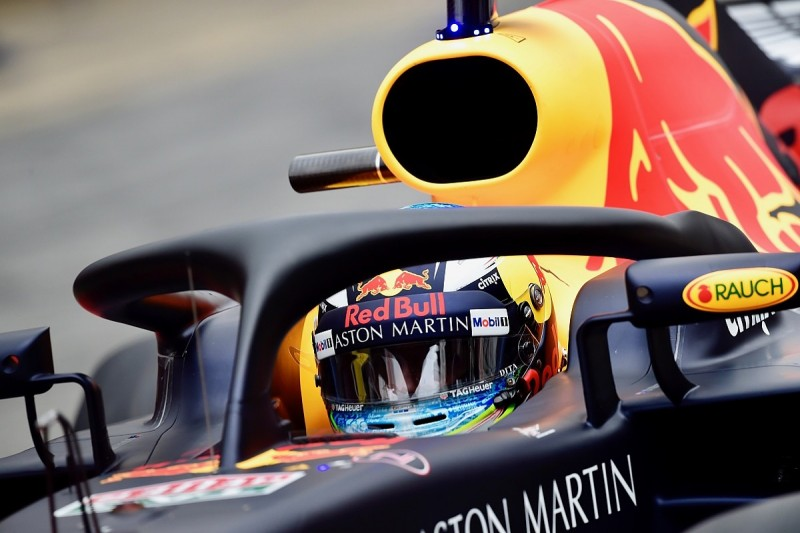

Head and Neck Support

A HANS device (head and neck support device) is a type of head restraint, a safety device in motorsports.
Head restraints are mandatory when competing with most major motorsports sanctioning bodies. They reduce the
likelihood of head or neck injuries, including the often fatal basilar skull fracture, in the event of a
crash. There are many such devices on the market today, but the HANS is the original and the most common.
Fireproof suit

A racing suit or racing overalls, often referred to as a fire suit due to its fire retardant
properties, is clothing such as overalls worn in various forms of auto racing by racing drivers, crew
members who work on the vehicles during races, track safety workers or marshals, and in some series
commentators at the event.
Halo

The halo is a driver crash-protection system used in open-wheel racing series,
which consists of a curved bar placed to protect the driver's head.